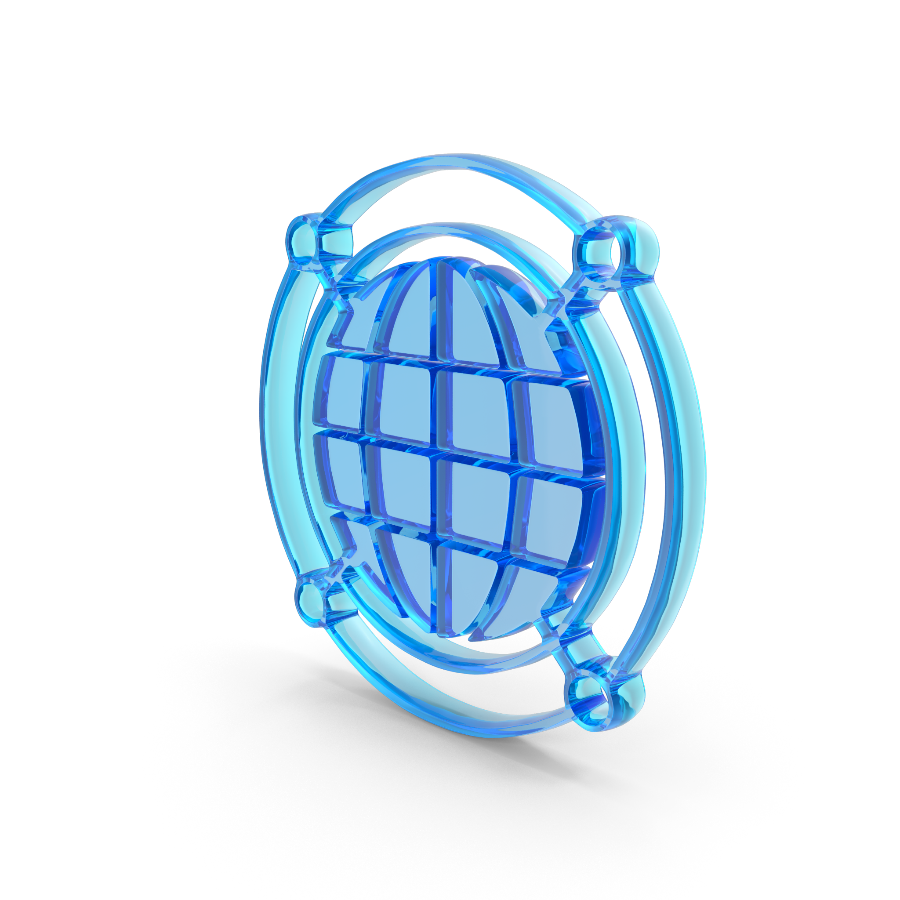
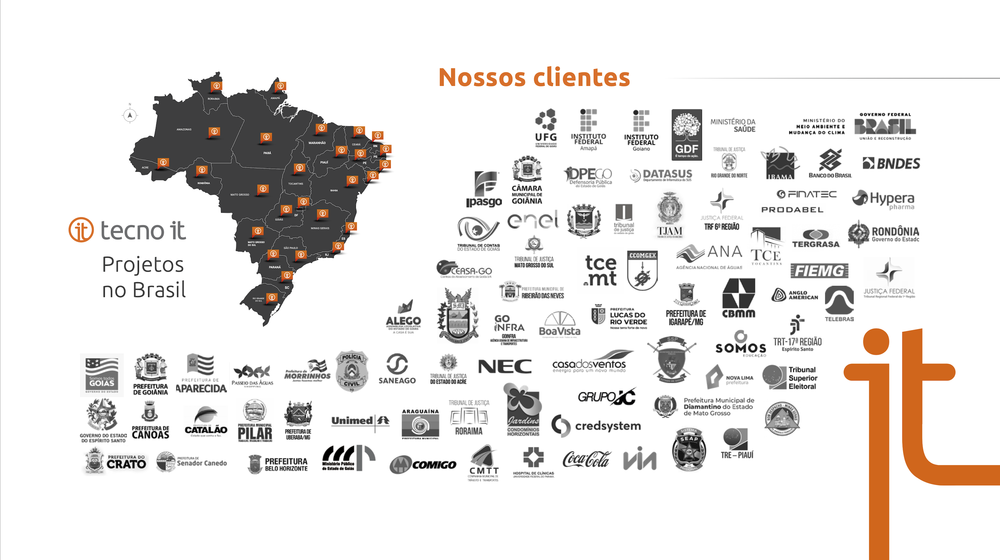

Nossa Marca

tecnologia (t)Propósito
Mudar o mundo para melhor, através da tecnologia.
Missão
Entregar tecnologias inovadoras com excelência.
Visão
Ser líder no mercado de tecnologia na América Latina até 2033.
Valores INOTEC
Seis elos que se unem formando a corrente cultural da Tecno it. Cada arco representa um valor que conecta e fortalece toda a equipe.
- Transformar ideias em soluções
- Uma sugestão simples que ajuda a fazer melhor
- Melhorar a performance da empresa todos os dias
- Construir relações de confiança
- Fortalecer conexões com clareza
- Comunicar claramente com os parceiros e colegas
- Decidir com assertividade e assumir a responsabilidade
- Direto ao ponto sem rodeios
- Admitir erros rapidamente e corrigir com o dobro de rapidez
- Agir com iniciativa e autogestão
- Ser protagonista da própria jornada
- Ver oportunidades de melhoria em cada desafio
- Tratar pessoas com respeito
- Colaborar para construir resultados juntos
- Pensar no coletivo antes do individual
- Pensar e agir como dono
- Garantir resultados para o cliente
- Ter compromisso com as entregas
Presença Global
10 países · 40 empresas · 100 mil empregados — Tecnautas em missão por todo o mundo.
Saúde e Segurança — SESMT
Riscos da Atividade
- Choque elétrico
- Quedas — nível e altura
- Esforço físico / repetitivo
- Corte e perfuração
- Incêndios em áreas técnicas
EPIs Obrigatórios
- Capacete, luvas e óculos de proteção
- Cinto de segurança (altura)
- Protetores auriculares
- Calçado de segurança
NR-10 · Elétrica
- Somente autorizados e capacitados
- Identificação e desenergização de circuitos
- Ferramentas isoladas
NR-35 · Altura
- Aplicável acima de 2 m
- Treinamento obrigatório
- Análise de risco + Permissão de Trabalho
NR-17 · Ergonomia
- Técnicas de levantamento de cargas
- Cuidados com postura
- Intervalos e pausas regulares
Incidentes
Qualquer incidente deve ser comunicado imediatamente ao SESMT. Nunca improvise após um ocorrido.
Onboarding · Engenharia
Projetos e Metodologia
- Leitura do escopo técnico antes do início
- Registro de atividades no sistema interno
- Comunicação diária com líder técnico
- Documentação As-Built obrigatória
Ferramentas e Sistemas
- Portal de projetos (credenciais via ti)
- Git / GitLab para versionamento
- Jira / Linear para gestão de tarefas
Acesso e Credenciais
- Credenciais no D+1 via equipe de ti
- VPN obrigatória em produção
- 2FA ativado em todas as contas
SST em Campo
- EPIs conforme NR-10 e NR-35
- Checklist diário de segurança
- Incidentes reportados ao SESMT imediatamente
Qualidade e Indicadores
- SLAs de entrega por contrato
- Relatório semanal de progresso
- Revisão técnica com pares antes do fechamento
Cultura de Equipe
- Stand-up diário às 9h com o time
- Retrospectiva quinzenal
- Mentoria para novos Tecnautas (D+30)
Segurança da Informação (PSI)
Princípios Fundamentais
- Confidencialidade — acesso apenas por autorizados
- Integridade — informação preservada e íntegra
- Disponibilidade — acesso quando necessário
- Uso ético dos recursos tecnológicos
Responsabilidades do Usuário
- Uso de senha segura com troca periódica
- Cumprimento das normas de segurança
- Comunicação imediata de incidentes à GSD
- Zelo pelos ativos de informação da empresa
Softwares & Licenciamento
- Somente softwares com licença válida
- Proibido: cracks, keygens, piratas
- Instalação não autorizada é infração grave
- Base legal: Lei 9.610/98 e Lei 9.609/98
Proteção de Dados (LGPD)
- Tratamento conforme LGPD (Lei 13.709/2018)
- Classificação da informação obrigatória
- Ativos críticos em áreas controladas
- Ambientes de produção e dev segregados
Monitoramento
- A empresa monitora estações, e-mail e navegação
- Auditorias periódicas de conformidade
- Plano de contingência testado anualmente
Classificação da Informação
- Definição clara de propriedade e custódia
- Controles especiais para dados sensíveis
- Regras específicas para dispositivos móveis
Primeiros 30 Dias
Semana 1 — Ambientação
Reuniões de apresentação, configuração de ferramentas e leitura da documentação de projetos em andamento.
Semana 2 — Shadowing
Acompanhar um sênior em campo ou projeto ativo. Entender padrões de qualidade e comunicação com cliente.
Semana 3–4 — Contribuição Guiada
Assumir tarefas com supervisão. Primeiro entregável técnico validado pelo líder no D+30.
Onboarding · Comercial
Cartela de Clientes
- Governo Federal: Ministérios, BNDES, Banco do Brasil
- Judiciário: TJ, TRF, TRT em múltiplos estados
- Privado: Enel, Coca-Cola, Unimed, Anglo American
Parceiros Estratégicos
- Lightera — Software/Plataforma
- SDC — Smart Data Computing
- ISS — Videomonitoramento
- HID — Controle de Acesso
- TP-Link — Redes e Infraestrutura
Processos Comerciais
- Qualificação de leads e oportunidades
- Propostas técnicas e comerciais
- Contratos e compliance
- Gestão pós-venda e renovação
Compliance Comercial
- Anti-suborno e LGPD em contratos
- Aprovação jurídica obrigatória
- Registro de toda tratativa no CRM
Mapa de Presença

Primeiros 30 Dias
Semana 1 — Imersão no Portfólio
Estudo completo das soluções, cases e cartela de clientes. Reunião com líderes de cada vertical.
Semana 2 — Processo e Ferramentas
Treinamento no CRM, metodologia de proposta e acompanhamento de pipeline com sênior.
Semana 3–4 — Primeira Oportunidade
Identificar e qualificar a primeira oportunidade com suporte do time. Apresentar ao gestor no D+30.
Onboarding · Administrativo Financeiro
Governança Financeira
- Balanço auditado anualmente
- Foco em rentabilidade sobre receita bruta
- DRE e cash flow monitorados mensalmente
Processos Administrativos
- Emissão e controle de NFs
- Gestão de contratos e aditivos
- Controle de despesas e reembolsos
Compliance e LGPD
- Conformidade com LGPD em dados financeiros
- Políticas de controle interno
- Relatórios de integridade para auditoria
Sistemas e Ferramentas
- ERP interno (acesso via ti)
- Plataforma Caju — reembolsos e despesas
- Conciliação bancária diária
Calendário Financeiro
- Fechamento contábil: dia 5 do mês seguinte
- Aprovação de despesas: toda sexta-feira
- Reunião de budget: trimestral
Documentação Obrigatória
- Leitura das políticas financeiras internas
- Assinatura de termo de confidencialidade
- Cadastro no sistema de reembolso
Política de Viagens Corporativas
Diárias de Alimentação
- Gerentes: R$ 120,00 / dia
- Coordenadores e Supervisores: R$ 100,00 / dia
- Demais cargos: R$ 80,00 / dia
- Café da manhã é fornecido pelo hotel
- Airbnb: até R$ 25,00 com comprovante fiscal
Hospedagem
- Reserva feita pelo time de Suprimentos
- Pode haver acomodação compartilhada
- Emergencial: reembolso máximo de R$ 200,00/diária
- Multas por atraso de check-out não são reembolsadas
Transporte
- Uber / 99 digitalizados no Caju
- Limite de 4 deslocamentos por dia
- Corridas fora do roteiro não são reembolsadas
Quilometragem — Veículo Próprio
- Diretores: R$ 1,75 / km
- Demais cargos: R$ 1,50 / km
- Motos: R$ 0,85 / km
- Até 200 km (ida + volta). Acima disso: locação obrigatória
Retorno ao Domicílio
- Distância < 500 km: retorno a cada 15 dias
- Distância ≥ 500 km: retorno a cada 30 dias
- Limite de 30 dias fora do domicílio (art. 469 §3º CLT)
Prazos de Pagamento
- Prestações até dia 08 → pagamento dia 15
- Prestações até dia 24 → pagamento dia 30
- Se cair em fim de semana: último dia útil anterior
Mobilidade Corporativa & Combustível
Adiantamento de Combustível
- Limite: R$ 1.500,00 / mês
- Creditado no 1º dia útil do mês
- Complemento possível: até R$ 500,00 (após usar 80%)
Veículos da Frota
- Uso exclusivo corporativo — vedado uso pessoal
- CNH enviada previamente ao Dep. Logística
- Checklist obrigatório antes da retirada
- Proibida transferência da condução sem autorização
Veículos Locados
- Fundo fixo de R$ 1.500 por cartão
- Carro passeio: R$ 70,00 / diária
- Autorização da Gerência de Engenharia para ajustes
Multas e Responsabilização
- Condutor responde integralmente por multas
- Danos por negligência: desconto em folha (art. 462 §1º CLT)
- Franquia de seguro por culpa: não reembolsável
Fluxo de Aprovação
- 1º Colaborador → preenchimento no Caju
- 2º Coordenador → validação
- 3º Analista de Projetos → conferência
- 4º Gerência → aprovação
- 5º Financeiro → aprovação final e pagamento
Documentos Obrigatórios
- Cupom fiscal com CPF do colaborador
- Planilha de Controle de Rotas assinada
- Odômetro inicial e final registrados
Onboarding · Recursos Humanos
"Você foi admitido por reunir condições e características adequadas às necessidades da Tecno it. Sua missão começa agora. Seu esforço, somado ao de todos, contribuirá para tornar maior o sucesso do nosso empreendimento e o seu em particular."
— Departamento de Recursos Humanos · tecno it
Admissão e Contratos
- Assinatura digital do contrato de trabalho
- Entrega de documentos admissionais
- Cadastro no sistema de ponto
- Benefícios: VT, VR, plano de saúde
Treinamentos Obrigatórios
- Treinamento SST (NR-10, NR-35 conforme função)
- LGPD e Segurança da Informação
- Código de Conduta e Ética
- Plataforma: itCast
Calendário de RH
- Avaliação de desempenho: semestral
- Pesquisa de clima: trimestral
- 1:1 com gestor: quinzenal (mínimo)
Desenvolvimento de Carreira
- Plano de Desenvolvimento Individual (PDI)
- Trilhas de aprendizado por função
- Certificações apoiadas pela empresa
Canais de Comunicação
- Ouvidoria interna (anonimato garantido)
- Canal de sugestões via itCast
- Reuniões All-hands mensais
Reconhecimento
- Programa Tecnauta Destaque
- Reconhecimento por metas atingidas
- Incentivos por certificações
Política de Jornada de Trabalho
Jornada & Ponto Eletrônico
- Jornada legal: até 44h semanais / 8h diárias
- Marcação obrigatória de entrada, saída e intervalos
- Aplicativo oficial da empresa com geolocalização
- Coleta apenas no momento do registro (não há monitoramento contínuo)
- Marcação pessoal — não pode ser delegada
Intervalos Legais
- Interjornada: mínimo 11h consecutivas (art. 66 CLT)
- Intrajornada: mínimo 1h para jornadas > 6h (art. 71 CLT)
Horas Extras
- Apenas com autorização prévia do CEO, por e-mail
- +50% nas duas primeiras horas diárias
- +100% em domingos e feriados
- +20% adicional noturno (22h–5h)
Banco de Horas
- Acordo Individual de Compensação (CCT — Cláusula 33ª)
- Compensação em até 1 ano, proporção 1x1
- Fechamento mensal no dia 25
Atestados & Declarações
- Entrega em até 48 horas do retorno
- Deve conter nome, data, horário e CRM do profissional
- Declarações abonam só o período do atendimento
Deslocamentos & Viagens
- Tempo em espera (aeroporto/rodoviária) não é jornada
- Dirigindo a serviço é jornada
- Sempre respeitando intervalos legais de 11h
Gestão de Pessoas & Benefícios
Recrutamento & Seleção
- Condução pelo RH junto à liderança da área
- Prioridade para recrutamento interno
- Vedada contratação com parentesco no mesmo departamento
- Avaliação técnica e comportamental
PCCR — Plano de Cargos e Carreira
- Estrutura baseada em responsabilidade, complexidade e impacto
- Movimentação vertical (promoção) ou horizontal
- Remuneração fixa + variável (bonificações e gratificações)
- Evolução não é automática
Benefícios Flexíveis (Caju)
- Plataforma Caju — gestão unificada de benefícios
- Descontos em farmácias da rede credenciada
- Voucher de aniversário
Saúde & Bem-estar
- Wellhub — academias e atividades físicas
- Conexa Saúde — telemedicina
- Plano de saúde (conforme regras da operadora)
Canal de Denúncias
- Manifestação identificada ou anônima
- Confidencialidade garantida
- Não admitida retaliação ao denunciante de boa-fé
- Conformidade com Lei 14.457/2022
Princípios de Gestão
- Alinhamento ao negócio
- Valorização da contribuição
- Meritocracia aplicada
- Transparência e responsabilidade
Compromisso Ambiental
Sustentabilidade
- Política paperless — redução de impressões
- Uso racional de água, energia, papel e equipamentos
- Priorização de fornecedores com compromisso ambiental
Gerenciamento de Resíduos
- Separação e parceria com cooperativas de reciclagem
- Descarte correto de resíduos técnicos (cabos, equipamentos)
- Redução de descartáveis nas operações internas
Biodiversidade
- Minimizar impactos nas regiões atendidas
- Ações de conservação e recuperação
- Sensibilização de colaboradores e parceiros
Os 6 Elos da nossa Cultura
- Transformar ideias em soluções
- Uma sugestão simples que ajuda a fazer melhor
- Melhorar a performance da empresa todos os dias
- Construir relações de confiança
- Fortalecer conexões com clareza
- Comunicar claramente com os parceiros e colegas
- Decidir com assertividade e assumir a responsabilidade
- Direto ao ponto sem rodeios
- Admitir erros rapidamente e corrigir com o dobro de rapidez
- Agir com iniciativa e autogestão
- Ser protagonista da própria jornada
- Ver oportunidades de melhoria em cada desafio
- Tratar pessoas com respeito
- Colaborar para construir resultados juntos
- Pensar no coletivo antes do individual
- Pensar e agir como dono
- Garantir resultados para o cliente
- Ter compromisso com as entregas
Precisa de ajuda? Fale com a gente.
Para facilitar a comunicação, esclarecer dúvidas e apoiar o início das suas atividades, você pode acessar os principais canais institucionais da Tecno it.
Segurança do Trabalho
SESMTDepartamento Pessoal
RHAssinatura de E-mail
Suporte CorporativoCanais Oficiais da Empresa
Diretriz de utilização
Os canais institucionais devem ser utilizados para:
- Esclarecimento de dúvidas
- Solicitação de suporte
- Acompanhamento de demandas relacionadas às atividades profissionais